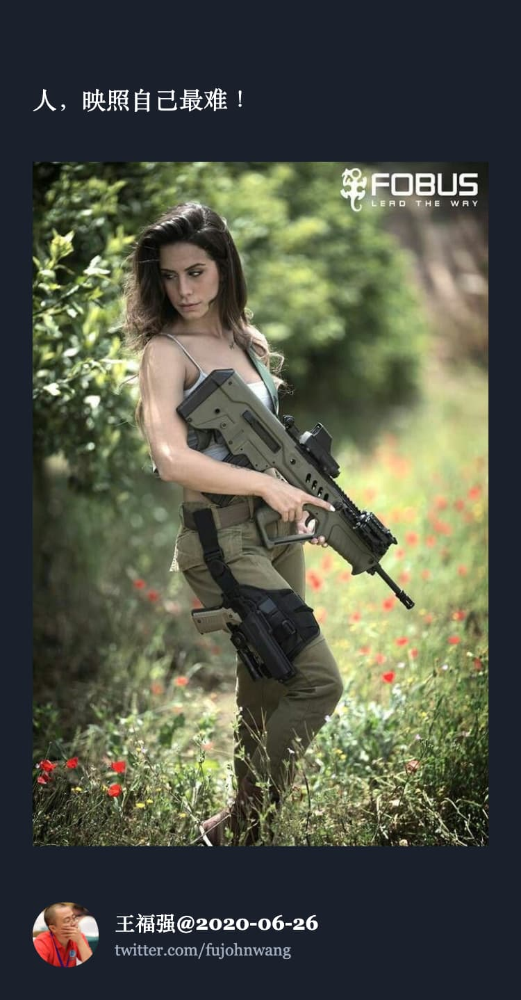

语气、态度与自我
王福强
这几年与人打交道上碰到一些挫折之后，才让我意识到我说话的语气有多致命， 而我自己其实是无所察觉的，因为从小受到父母之间那种沟通模式的影响，天天耳濡目染不知不觉之间就形成了，自己完全不自知，直到这几年碰到一些挫折，反思现象和本质，才逐渐意识到这个问题 1。

你自己可以说自己没有恶意，但每个人其实更多还是从对方说话的语气、态度上来评价一个人，继而决定采取什么策略与之打交道的。
我老婆经常翻旧账拿我早些年“追90后”的事儿损我，但她怎么猜都不会猜到结局的真相到底是什么，因为只有我自己最清楚。其实是我自己发现，我跟对方说话都是命令式的，第一次约女孩子这样说话，自然很难形成亲密感，这还谈啥呀，自身问题很难短期解决，所以，决定还是算了。知道了自己傻逼，就不要像傻逼那样坚持了，害人害己，何必？
另外一个事情是我妈2019年因为中风住院，我去陪床，医生查房的时候，我就问了下医生的看法和建议，但发现医生没有好气儿地转身跟一行医生和护士说我啥，反正很生气的样子，现在看，估计也是说话语气有问题，而我当时虽然自己觉得是在虚心询问，但表现出来的显然不是，起码在别人眼里不是，所以依然导致的是不好的结果；
还有就是2020年的一企业客户，某次跟CEO说话的时候，虽然也是出于好心，但应该是说话的时候也有那种训导式的语气，导致客户老板直接解约，哎，不能说是人家客户的错，还是自己的劣势导致这样的结果，所以我也不会就这个事去怪罪客户，而且，尾款我也没有脸去要，毕竟，还是我伤了客户的自尊，而做生意，还是得人和为先啊，规矩和合同大多数时候真得都只是个底线。
最伤的应该是我跟我老婆之间的沟通和关系处理，两个人性格都比较刚硬，也都是独立打拼到今天，所以，脾气上谁也不服谁，再加上我天天面对屏幕养成的屏幕脸(long face）+ 我的命令式语气，导致经常性的误会和相互内耗，自己虽然也时常会有离婚的念头，但想想很多时候，自己说话的语气可能真得是一个很致命的缺陷，这个是怎么样都逃避不了的一个事情。
还是得思考怎么搞搞这个个人身上特有的bug，看能不能修复下，虽然都四十多年了，但要想进一步摆脱之前在别人那里的印象，要想进一步在创业路上和人生路上再上一个台阶，这个致命的缺点还是要正视它！
当然，本身自己这“德行”就很招人烦，所以也就别指望别人能给你指出来怎么回事了，况且大多数时候，为人处世上还是别主动招人烦比较好，不是有那么一句话嘛，大意是“如果你不知道如何赞扬别人，那就闭嘴”↩︎
「为AI疯狂」星球上，扶墙老师正在和朋友们讨论有趣的AI话题，你要不要⼀起来呀？^-^
这里
- 不但有及时新鲜的AI资讯和深度探讨
- 还分享AI工具、产品方法和商业机会
- 更有体系化精品付费内容等着你，加入星球(https://t.zsxq.com/0dI3ZA0sL) 即可免费领取。(加入之后一定记得看置顶消息呀！)

存量的时代，省钱就是赚钱。
在增量的时代，省钱其实是亏钱。
避坑儿是省钱的一种形式，更是真正聪明人的选择！
弯路虽然也是路，但还是能少走就少走，背后都是高昂的试错成本。
订阅「福报」，少踩坑，少走弯路，多走一步，就是不一样的胜率！